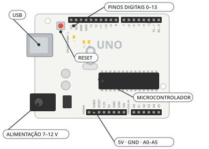
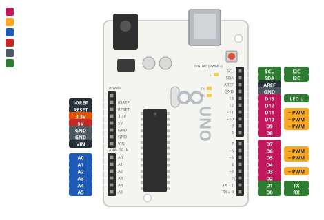

O que é o Arduino Uno R3?
O Arduino Uno R3 é uma placa de prototipagem de código aberto baseada no microcontrolador ATmega328P. Ela lê sinais pelas entradas, executa o programa que escrevemos e controla LEDs, motores e outros dispositivos pelas saídas. É programada em C/C++ na Arduino IDE (gratuita, em arduino.cc) e pode ser testada virtualmente no Tinkercad antes da montagem real.

As principais partes da placa.
Como funciona
O coração da placa é o microcontrolador ATmega328P, um pequeno computador num único chip. Ele guarda o programa que enviamos pelo cabo USB e o executa sem parar, enquanto a placa estiver ligada.
Todo programa de Arduino tem duas partes: setup(), que roda uma vez quando a placa liga, e loop(), que se repete para sempre.
Os pinos digitais (0 a 13) trabalham com dois estados: ligado (5 V) ou desligado (0 V). Os pinos com ~ (3, 5, 6, 9, 10 e 11) também geram PWM, que simula valores intermediários. As entradas analógicas (A0 a A5) medem tensões de 0 a 5 V.

Tipos
Uno R3
A placa mais usada para aprender. Tem pinos fáceis de encaixar e é a que usamos na oficina.
Nano
Mesmo chip do Uno numa placa bem menor, que encaixa direto na protoboard.
Mega 2560
Muito mais pinos (54 digitais e 16 analógicos), para projetos grandes.
Leonardo
Pode se passar por teclado ou mouse quando ligado ao computador.
Ficha técnica
- Microcontrolador: ATmega328P (16 MHz)
- Tensão de operação: 5 V
- Alimentação: USB ou 7–12 V pelo jack
- 14 pinos digitais, 6 deles com PWM (~)
- 6 entradas analógicas (A0–A5), com 10 bits (0 a 1023)
- Corrente recomendada: 20 mA por pino (máximo absoluto de 40 mA)
- Memória de programa: 32 KB
Montagem dos componentes
Neste exemplo não é preciso montar nada: basta ligar a placa ao computador pelo cabo USB.
Você vai precisar de
- 1× Arduino Uno R3
- 1× Cabo USB
Ligações
| USB | Computador |
|---|
#< código exemplo >
O exemplo “Blink” pisca o LED L, que já vem soldado na placa e ligado ao pino 13. Se ele piscar a cada segundo, a placa, o cabo e a Arduino IDE estão funcionando.
/*
Oficina de Robótica SELFÍS — Componente: Arduino Uno R3
Exemplo: "Blink" — o primeiro programa de quem começa com Arduino.
Não precisa montar nada: usa o LED "L" que já vem soldado na placa (pino 13).
*/
void setup() {
pinMode(LED_BUILTIN, OUTPUT); // LED_BUILTIN é o pino 13 no Arduino Uno
}
void loop() {
digitalWrite(LED_BUILTIN, HIGH); // acende o LED da placa
delay(1000); // espera 1 segundo
digitalWrite(LED_BUILTIN, LOW); // apaga
delay(1000); // espera 1 segundo
}
💡 Teste primeiro no Tinkercad (Circuitos → Código → Texto → cole o código → Iniciar simulação). Depois carregue na placa real pela Arduino IDE.